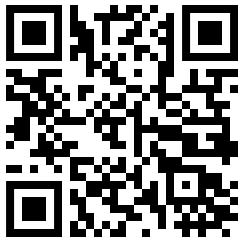

ضع الجهاز بشكل مسطح على السطح
تفتقر معظم أجهزة الكمبيوتر إلى أجهزة الاستشعار المطلوبة. امسح رمز الاستجابة السريعة للمتابعة على جهازك المحمول.

كيفية استخدام مقياس الميل هذا عبر الإنترنت لقياس الزوايا
مقياس الميل هذا عبر الإنترنت هو تطبيق ويب مصمم لقياس زوايا السطح (المنحدر، ودرجة الميل، واللف) بدقة عالية، باستخدام المستشعرات المدمجة بالفعل في هاتفك الذكي أو جهازك اللوحي. إنه يحول جهازك إلى ميزان تسوية رقمي قوي، أو مستوى فقاعة، أو كلينومتر مجانًا، دون الحاجة إلى أي تثبيت للبرامج. كل شيء يعمل مباشرة في متصفح الويب الخاص بك، مما يجعل من السهل قياس الزوايا والمنحدرات في أي مكان. استخدمه كأداة موثوقة لقياس الزاوية، أو قياس المنحدر، أو التحقق من درجة الميل واللف.
الوظائف الأساسية
- قياس الزاوية في الوقت الفعلي: بمجرد منح الإذن بالوصول إلى المستشعر والضغط على بدء، يقرأ التطبيق البيانات من مقياس التسارع والجيروسكوب في جهازك لحساب درجة الميل (المحور السيني) واللف (المحور الصادي) في الوقت الفعلي. يوفر هذا قياسًا فوريًا للزاوية والمنحدر.
- مستوى فقاعة عالي الدقة: تتميز الواجهة الرسومية المركزية بفقاعة افتراضية تتحرك بناءً على ميل الجهاز، مما يوفر دليلاً مرئيًا بديهيًا لتحقيق مستوى مثالي. إنه مقياس ميل مجاني في متصفحك.
- معايرة الصفر: يتيح لك زر الصفر تعيين أي سطح كنقطة مرجعية (0 درجة). هذا مفيد لقياس زاوية سطح واحد بالنسبة إلى آخر، بدلاً من المستوى المطلق. ميزة مثالية لأي أداة زاوية في المتصفح. يمكنني أيضًا استخدامها لضبط النتوءات في أجهزتك المحمولة مثل الكاميرات البارزة.
- التسوية بدون رؤية: قم بتنشيط التغذية الراجعة الصوتية في الإعدادات، وسيقوم جهازك بإصدار صفير عند تحقيق مستوى مثالي، مما يتيح لك تسوية الأسطح دون مراقبة الشاشة باستمرار.
إخلاء المسؤولية: فهم الدقة
يرجى العلم أنه على الرغم من أن هذه الأداة توفر طريقة ملائمة لقياس المنحدر، إلا أن المستشعرات الموجودة في الهاتف الذكي النموذجي غير مصممة لقياس الزوايا بدرجة دقة مترولوجية. يمكن لعوامل مثل جودة المستشعر، ومعايرة الجهاز، وحتى النتوءات الصغيرة على حافظة هاتفك أن تؤدي إلى حدوث أخطاء. بالنسبة للعديد من مهام DIY والهواة، فإن الدقة أكثر من كافية. ومع ذلك، بالنسبة للتطبيقات المهنية التي تتطلب دقة معتمدة، يوصى باستخدام ميزان تسوية مخصص ومعاير. توفر هذه الأداة قياسًا موثوقًا للزاوية لمعظم الاحتياجات اليومية.
كيفية تحسين دقة القياس
يمكنك تحسين دقة قياس المنحدر بشكل كبير وتعويض انحياز المستشعر باستخدام طريقة معايرة بسيطة من خطوتين. تلغي هذه العملية بشكل فعال معظم خطأ الإزاحة الصفرية المتأصل في الهاتف عندما تحتاج إلى قياس زاوية بدقة أفضل.
- القياس الأول: ضع هاتفك على السطح الذي تريد قياسه ولاحظ قراءة الزاوية (على سبيل المثال 8°).
- القياس الثاني: دون رفعه، قم بتدوير هاتفك 180 درجة بالضبط في نفس المكان (بحيث يكون "رأسًا لرأس" مع موضعه الأصلي) وخذ قراءة ثانية (على سبيل المثال 10°).
- حساب الزاوية الحقيقية: الزاوية الحقيقية هي متوسط هذين القياسين. على سبيل المثال: (8 + 10) / 2 = 9°. هذا هو المنحدر الأكثر دقة في المتصفح.
استخدم طريقة الدوران 180 درجة لإلغاء أخطاء المستشعر وتحقيق قياسات زاوية أكثر دقة.
كيفية إجراء معايرة "الصفر"
تتيح لك معايرة الصفر تعيين سطحك الحالي كنقطة مرجعية جديدة (0 درجة)، وهو أمر ضروري لقياس الزوايا النسبية أو تعويض الأسطح غير المستوية. إليك كيفية القيام بذلك:
- ضع الجهاز: ضع هاتفك الذكي أو جهازك اللوحي بقوة على السطح الذي ترغب في تعيينه كمرجع 0°.
- استقر: تأكد من أن جهازك مستقر ولا يتحرك.
- اضغط على الصفر للمعايرة: انقر فوق زر الصفر في واجهة مقياس الميل.
- خط الأساس الجديد: ستتم إعادة تعيين قراءات درجة الميل واللف الحالية على الفور إلى 0°، مما يؤسس هذا الاتجاه كخط أساس جديد لجميع القياسات اللاحقة.
تحدد معايرة الصفر السطح الحالي كمرجع 0°، مما يسمح بقياسات الزوايا النسبية.
التكيف مع الكاميرات البارزة
غالبًا ما تحتوي الهواتف الذكية الحديثة على نتوءات للكاميرا تمنعها من الاستلقاء بشكل مسطح تمامًا. يمكن أن يتعارض هذا مع القياسات الدقيقة، ولكن يمكنك تصحيحه بسهولة باستخدام زر الصفر، كما هو موضح أدناه.
- ضع ولاحظ: ضع هاتفك على السطح. لاحظ أن نتوء الكاميرا يخلق ميلًا طفيفًا ومستقرًا، مما يظهر قراءة غير صفرية.
- اضغط على الصفر: انقر فوق زر الصفر. هذا يوجه مقياس الميل للتعامل مع موضع الهاتف المائل الحالي كنقطة مرجعية جديدة "0°".
- قم بالقياس بدقة: ستعرض الشاشة الآن 0°. يتم إلغاء تأثير نتوء الكاميرا، مما يتيح لك أخذ قياسات دقيقة بالنسبة للسطح.
استخدم "الصفر" لتعويض الميل الناجم عن نتوء الكاميرا.
حالات استخدام مفصلة لمقياس الميل الخاص بنا
مقياس الميل هذا المعتمد على المتصفح هو أداة متعددة الاستخدامات لقياس درجة الميل واللف للعديد من المهام:
- البناء والنجارة: استخدم هذا الكلينومتر للتأكد من أن الجدران رأسية تمامًا والأرضيات مستوية. عند تأطير السقف، قم بقياس درجة الميل للتأكد من قطع العوارض الخشبية وتركيبها بالزاوية الصحيحة. إنه رائع أيضًا لضبط المنحدر المناسب لتصريف المياه في الباحات أو الممرات.
- تركيب الألواح الشمسية: لتحقيق أقصى قدر من توليد الطاقة، يجب ضبط الألواح الشمسية على زاوية إمالة مثالية بناءً على خط العرض والموسم. استخدم هذه الأداة لقياس درجة الميل بدقة أثناء التثبيت، مما يضمن أن تكون لوحاتك ذات اتجاه صحيح للشمس لتحقيق أقصى كفاءة.
- DIY وتحسين المنزل: علق إطارات الصور بشكل مستقيم تمامًا في كل مرة. عند تجميع الأثاث أو تركيب خزائن المطبخ، استخدم مقياس الميل للتأكد من أن كل شيء مستوٍ. إنها أيضًا الأداة المثالية لقياس المنحدر عند إعداد الأجهزة مثل الغسالات لمنع عدم التوازن والاهتزاز.
- التصوير الفوتوغرافي والفيديو: تجنب الآفاق المائلة باستخدام هذه الأداة لتسوية الكاميرا على حامل ثلاثي القوائم. هذا أمر بالغ الأهمية بشكل خاص لتصوير المناظر الطبيعية والمعمارية والبانورامية حيث تكون الخطوط المستقيمة ضرورية للحصول على نتيجة احترافية.
- تسوية المركبات والمنازل المتنقلة: تحقق من زوايا خط القيادة بعد تعديل نظام تعليق السيارة. عند التخييم، استخدمه لتسوية الكرفان أو المنزل المتنقل للراحة ولضمان عمل الأجهزة (مثل الثلاجات) بشكل صحيح. إنها أداة قياس منحدر مفيدة لأي إعداد للمركبة.
- السباكة والصرف الصحي: عند تركيب أنابيب الصرف، يعد المنحدر اللطيف والمتسق أمرًا بالغ الأهمية للتدفق السليم. استخدم مقياس الميل هذا عبر الإنترنت لقياس الزاوية بدقة ومنع مشاكل الانسداد أو المياه الراكدة في المستقبل.
أسئلة مكررة
امنح الإذن بالوصول إلى المستشعر، واضغط على بدء القياس، ثم ضع جهازك على السطح. سيعرض مقياس الميل زوايا درجة الميل (المحور السيني) واللف (المحور الصادي) في الوقت الفعلي. استخدم زر الصفر لتعيين نقطة مرجعية.
تعتمد الدقة على جودة مقياس التسارع في جهازك. بالنسبة لمهام DIY والهوايات، فهي دقيقة للغاية. للحصول على دقة من الدرجة المترولوجية الاحترافية، يوصى باستخدام ميزان تسوية مخصص ومعاير. استخدم طريقة المعايرة بالدوران 180 درجة لتحسين الدقة.
نعم، تتم معالجة جميع بيانات المستشعر مباشرة على جهازك في متصفحك. لا يتم إرسال أي معلومات إلى خوادمنا. قياساتك خاصة تمامًا.
يمكنك استخدامه لتركيب الألواح الشمسية، والبناء، والنجارة، ومشاريع DIY، والتصوير الفوتوغرافي، وتسوية المركبات، والسباكة، وأي مهمة تتطلب قياس الزاوية أو المنحدر.
ضع هاتفك على السطح مع نتوء الكاميرا، ولاحظ القراءة، ثم اضغط على زر الصفر. هذا يعاير تأثير نتوء الكاميرا، مما يسمح بقياسات دقيقة.
100% خاص وآمن
نحن ملتزمون بخصوصيتك. تتم معالجة جميع بيانات المستشعر مباشرة على جهازك بواسطة المتصفح. لا يتم إرسال أي معلومات إلى خوادمنا أبدًا. قياساتك ملكك وحدك.